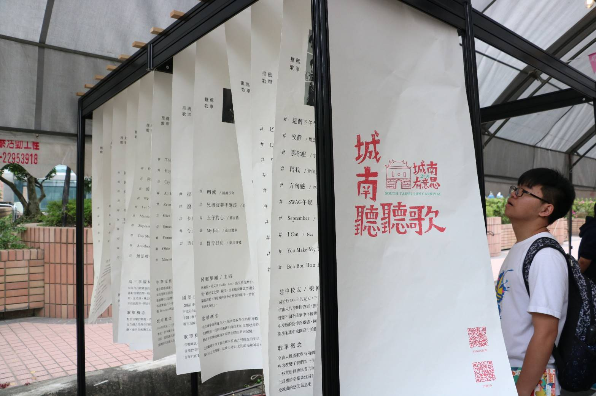

簡介
以牯嶺街「台灣第一舊書街」文史記憶為基底，邀請城南在地的老書攤，特色圖書館、獨立書店、獨立出版、小誌、在地館藏、文具印刷、延慧書庫……與創新的文青雜誌來參與。
使愛書人徜徉於書海中，讓孩子在具有濃濃文史記憶的牯嶺街道，能同時享受到書香氣息與活潑的桌遊樂趣，重現牯嶺街藝文氛圍。
 設施-城南聽聽歌感想
春日晒書市集由不同領域的攤位組成，不僅可以在這裡找到自己想要尋找的東西，同時也可以找到許多意想不到的事物。
而其中最令我印象深刻的莫過於城南聽聽歌這項設施了，這項設施找了幾位曾經生活在城南周邊的藝人、媒體人、創作者來列出自己平常會聽的歌單，而我發現自己平常會聽的歌和閃靈樂團的主唱差不多。
展區內邀請各領域講者演講。